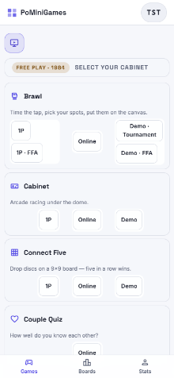
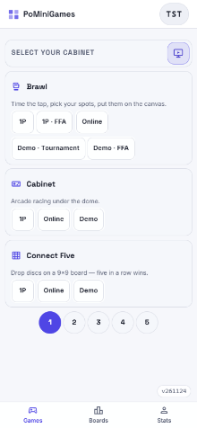
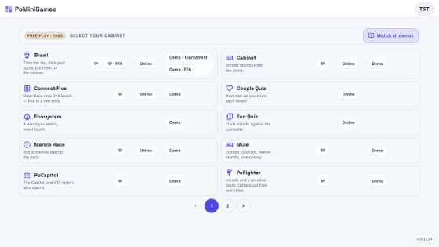
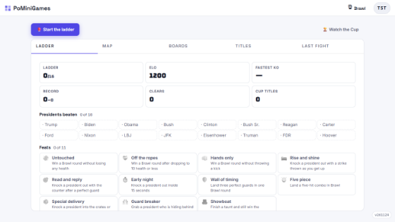
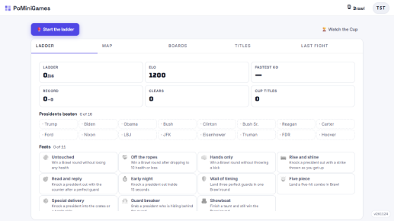
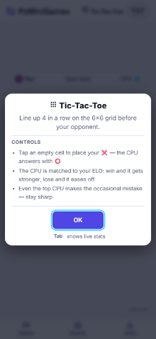
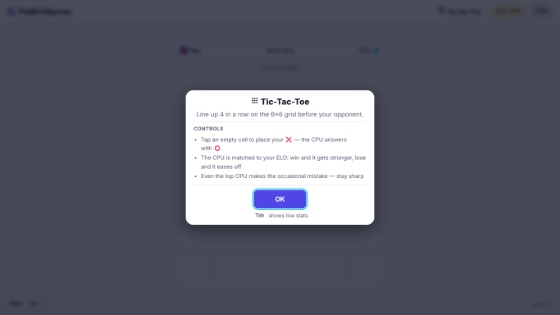

v4-menu-radzen
PoMiniGames · 261124-v4-menu-radzen · before | after, 1366×768 and 390×844, captured locally (scripts/screenshots.ps1)
- Main menu paged to fit one screen (Radzen pager, swipe, PageUp/PageDown)
- Buttons are Radzen PoButtons with the same look
- Brawl HQ tab panel scrolls inside a focusable region
/ · 390 px
Before
After
/ · 1366 px
Before After
After
/pobrawl/hq · 1366 px
Before
After
/tictactoe/1player · 390 px
Before
After
/tictactoe/1player · 1366 px
Before After
After